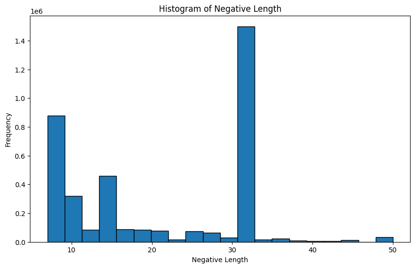
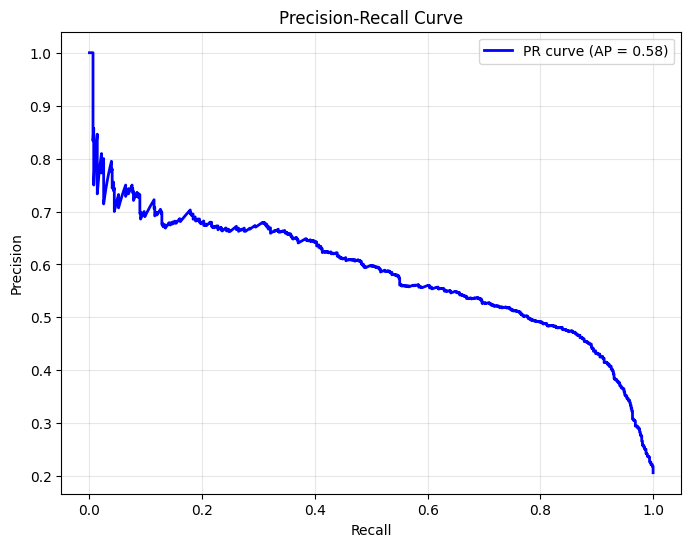

import pandas as pdfrom collections import Counterimport matplotlib.pyplot as pltimport seaborn as snsimport numpy as npimport Biofrom sklearn.ensemble import RandomForestClassifierfrom sklearn.metrics import classification_report, accuracy_score, confusion_matrix, roc_auc_score, roc_curvefrom Bio.SeqUtils.ProtParam import ProteinAnalysisimport requestsfrom io import StringIOfrom Bio import SeqIOepitopes = pd.read_csv(r'/Users/tariq/Documents/capstone/data/epitope_table_export_1740279588.csv')assays = pd.read_csv(r'/Users/tariq/Documents/capstone/data/tcell_table_export_1740279970.csv')def fetch_full_sequence(url):if pd.notna(url): # Check if the URL is not NaN url =f'{url}.fasta'try: response = requests.get(url)if response.status_code ==200: fasta_io = StringIO(response.text) records =list(SeqIO.parse(fasta_io, "fasta"))if records: # Check if there are any recordsreturnstr(records[0].seq)else:print("No records found in the FASTA file.")except requests.exceptions.RequestException as e:print(f"Request failed: {e}")returnNone#epitopes['Full Sequence'] = epitopes['Epitope - Molecule Parent IRI'].apply(fetch_full_sequence)epitopes = pd.read_csv(r'/Users/tariq/Documents/capstone/data/epitope_full_seq.csv')# make all the column names snake caseepitopes.columns = epitopes.columns.str.lower()assays.columns = assays.columns.str.lower()# remove spaces from column namesepitopes.columns = epitopes.columns.str.replace(' ', '')epitopes.columns = epitopes.columns.str.replace('-', ' ')epitopes.columns = epitopes.columns.str.replace(' ', '_')assays.columns = assays.columns.str.replace(' ', '')assays.columns = assays.columns.str.replace('-', ' ')assays.columns = assays.columns.str.replace(' ', '_')epitopes = epitopes.filter(['epitope_name', 'fullsequence'])assays = assays.filter(['epitope_name', 'epitope_moluculeparent', 'host_name', 'host_mhcpresent', 'assay_method','assay_responsemeasured', 'assay_qualitativemeasurement', 'mhcrestriction_name', 'mhcrestriction_class', 'assayantigen_name'])# map mhc name and class from the assays dataframe to a new column in the epitopes dataframe based on epitope_namemhc = assays.filter(['epitope_name', 'mhcrestriction_name', 'mhcrestriction_class'])mhc = mhc.drop_duplicates(subset=['epitope_name'])epitopes = epitopes.merge(mhc, on='epitope_name', how='left')
C:\Users\Tariq\AppData\Local\Temp\ipykernel_22336\2635103461.py:15: DtypeWarning: Columns (13,14,45,46,47,48,49,54,55,56,57,60,65,66,67,68,69,70,71,72,73,74,75,76,77,78,79,82,83,84,85,86,87,88,89,90,91,92,93,94,95,96,97,98,99,100,101,102,105,106,107,108,109,110,111,112,113,115,120,123,128,132,134,135,141,142,143,144,145,149,152) have mixed types. Specify dtype option on import or set low_memory=False.
assays = pd.read_csv(r'/Users/tariq/Documents/capstone/data/tcell_table_export_1740279970.csv')
# Function to count amino acids in a peptidedef count_amino_acids(peptide):try:# Create a ProteinAnalysis object for the peptide analyzer = ProteinAnalysis(peptide)# Get amino acid counts and normalize to frequencies aa_count = analyzer.count_amino_acids() total_aa =sum(aa_count.values()) aa_freq = {aa: count for aa, count in aa_count.items()}# Add the peptide itself to the results aa_freq['peptide'] = peptidereturn aa_freqexceptExceptionas e:# Handle invalid peptides (e.g., with non-standard amino acids) result = {aa: 0for aa in'ACDEFGHIKLMNPQRSTVWY'} result['peptide'] = peptidereturn result# Create analyzer function that will be used in the next celldef analyzer(peptide):return count_amino_acids(peptide)# Use both epitope name and peptide sequence in the DataFrameepitope_composition_df = epitopes.apply(lambda row: count_amino_acids(row['epitope_name']), axis=1).apply(pd.Series)
epitope_composition_df.head()
A
C
D
E
F
G
H
I
K
L
...
N
P
Q
R
S
T
V
W
Y
peptide
0
2
0
0
0
0
2
0
2
0
1
...
0
0
0
0
0
1
1
0
0
AAGIGILTV
1
2
0
0
0
0
2
0
3
0
1
...
0
0
0
0
0
1
1
0
0
AAGIGILTVI
2
1
1
1
0
1
1
2
0
0
0
...
0
1
0
0
1
0
1
0
0
ACDPHSGHFV
3
1
0
1
0
1
1
0
0
1
4
...
0
0
0
0
0
0
1
0
0
ADLVGFLLLK
4
1
1
1
1
1
0
0
0
0
2
...
0
0
0
0
1
0
1
0
0
ADVEFCLSL
5 rows × 21 columns
# Example DataFrame with a 'peptide' columndf = pd.DataFrame({'peptide': ['ACDEFGHIK', 'LMNPQRSTV', 'WYFP']})# Kyte-Doolittle hydrophobicity scalekyte_doolittle = {'I': 4.5, 'V': 4.2, 'L': 3.8, 'F': 2.8, 'C': 2.5,'M': 1.9, 'A': 1.8, 'G': -0.4, 'T': -0.7, 'S': -0.8,'W': -0.9, 'Y': -1.3, 'P': -1.6, 'H': -3.2, 'E': -3.5,'Q': -3.5, 'D': -3.5, 'N': -3.5, 'K': -3.9, 'R': -4.5}def compute_avg_hydrophobicity(peptide):# Get hydrophobicity scores for each amino acid; default to 0 if missing scores = [kyte_doolittle.get(aa, 0) for aa in peptide]returnsum(scores) /len(scores) if scores else0# Apply the function to the 'peptide' column to create a new column 'avg_hydro'epitopes['epitope_avg_hydro'] = epitopes['epitope_name'].apply(compute_avg_hydrophobicity)# Import the molecular_weight function from Bio.SeqUtilsdef calculate_molecular_weight(peptide):"""Calculate the molecular weight of a peptide sequence using Biopython."""try:# ProteinAnalysis only works with standard amino acids protein = ProteinAnalysis(peptide)return protein.molecular_weight()exceptExceptionas e:# Handle peptides with non-standard amino acidsreturnNone# Apply the function to calculate molecular weight for each epitopeepitopes['molecular_weight'] = epitopes['epitope_name'].apply(calculate_molecular_weight)def calculate_aromaticity(peptide):"""Calculate the aromaticity of a peptide sequence using Biopython."""try:# ProteinAnalysis only works with standard amino acids protein = ProteinAnalysis(peptide)return protein.aromaticity()exceptExceptionas e:# Handle peptides with non-standard amino acidsreturnNone# Apply the function to calculate molecular weight for each epitopeepitopes['aromaticity'] = epitopes['epitope_name'].apply(calculate_aromaticity)def calculate_isoelectric_point(peptide):"""Calculate the isoelectric point of a peptide sequence using Biopython."""try:# ProteinAnalysis only works with standard amino acids protein = ProteinAnalysis(peptide)return protein.isoelectric_point()exceptExceptionas e:# Handle peptides with non-standard amino acidsreturnNone# Apply the function to calculate molecular weight for each epitopeepitopes['isoelectric_point'] = epitopes['epitope_name'].apply(calculate_isoelectric_point)def calculate_instability(peptide):"""Calculate the instability of a peptide sequence using Biopython."""try:# ProteinAnalysis only works with standard amino acids protein = ProteinAnalysis(peptide)return protein.instability_index()exceptExceptionas e:# Handle peptides with non-standard amino acidsreturnNone# Apply the function to calculate molecular weight for each epitopeepitopes['instability'] = epitopes['epitope_name'].apply(calculate_instability)def calculate_charge_at_pH7(peptide):"""Calculate the charge of a peptide sequence at pH 7 using Biopython."""try:# ProteinAnalysis only works with standard amino acids protein = ProteinAnalysis(peptide)return protein.charge_at_pH(7)exceptExceptionas e:# Handle peptides with non-standard amino acidsreturnNone# Apply the function to calculate molecular weight for each epitopeepitopes['charge_at_pH7'] = epitopes['epitope_name'].apply(calculate_charge_at_pH7)
epitopes.head()
epitope_name
fullsequence
mhcrestriction_name
mhcrestriction_class
epitope_length
epitope_avg_hydro
molecular_weight
aromaticity
isoelectric_point
instability
charge_at_pH7
0
AAGIGILTV
MPREDAHFIYGYPKKGHGHSYTTAEEAAGIGILTVILGVLLLIGCW...
HLA-A2
I
9
2.122222
813.9814
0.000000
5.570017
11.422222
-0.204125
1
AAGIGILTVI
MPREDAHFIYGYPKKGHGHSYTTAEEAAGIGILTVILGVLLLIGCW...
HLA-A*02:01
I
10
2.360000
927.1390
0.000000
5.570017
11.280000
-0.204125
2
ACDPHSGHFV
NaN
HLA-A2
I
10
-0.140000
1069.1507
0.100000
5.972266
61.830000
-1.038557
3
ADLVGFLLLK
MSLEQRSLHCKPEEALEAQQEALGLVCVQAATSSSSPLVLGTLEEV...
HLA-A*11:01
I
10
1.620000
1088.3394
0.100000
5.880358
-16.470000
-0.204004
4
ADVEFCLSL
MLLAVLYCLLWSFQTSAGHFPRACVSSKNLMEKECCPPWSGDRSPC...
HLA-B*44:03
I
9
1.233333
996.1348
0.111111
4.050028
20.855556
-2.210095
Generation of Negative Samples
def generate_negatives(row): epitope = row["epitope_name"] full_seq = row["fullsequence"] mhc = row["mhcrestriction_name"]# Handle missing or empty sequencesif pd.isnull(full_seq) or full_seq =="":return [] epitope =str(epitope) full_seq =str(full_seq) ep_len =len(epitope) negatives = []for i inrange(len(full_seq) - ep_len +1): window = full_seq[i:i+ep_len]if window != epitope: negatives.append({"peptide": window, "mhc": mhc})return negatives'''# Apply the function to each rownegatives = pd.DataFrame()negatives['negatives'] = epitopes.apply(generate_negatives, axis=1)negatives = negatives[["negatives"]].explode("negatives").reset_index(drop=True)negatives.dropna(subset=["negatives"], inplace=True)# Remove duplicate peptide-mhc combinationsprint(f"Shape before removing duplicates: {negatives.shape}")negatives = negatives.drop_duplicates(subset=['negatives'])print(f"Shape after removing duplicates: {negatives.shape}")# Check for any remaining NaN valuesprint(f"Number of NaN values in negatives: {negatives['negatives'].isna().sum()}")# Extract peptide and mhc into separate columnsnegatives['peptide'] = negatives['negatives'].apply(lambda x: x['peptide'])negatives['mhc'] = negatives['negatives'].apply(lambda x: x['mhc'])# Calculate features on the peptide columnnegatives['peptide_length'] = negatives['peptide'].apply(len)negatives['peptide_avg_hydro'] = negatives['peptide'].apply(compute_avg_hydrophobicity)negatives['molecular_weight'] = negatives['peptide'].apply(calculate_molecular_weight)negatives['aromaticity'] = negatives['peptide'].apply(calculate_aromaticity)negatives['isoelectric_point'] = negatives['peptide'].apply(calculate_isoelectric_point)negatives['instability'] = negatives['peptide'].apply(calculate_instability)negatives['charge_at_pH7'] = negatives['peptide'].apply(calculate_charge_at_pH7)# Drop the original dictionary column if no longer needednegatives.drop('negatives', axis=1, inplace=True)'''
'\n# Apply the function to each row\n\nnegatives = pd.DataFrame()\nnegatives[\'negatives\'] = epitopes.apply(generate_negatives, axis=1)\nnegatives = negatives[["negatives"]].explode("negatives").reset_index(drop=True)\nnegatives.dropna(subset=["negatives"], inplace=True)\n\n\n# Remove duplicate peptide-mhc combinations\nprint(f"Shape before removing duplicates: {negatives.shape}")\nnegatives = negatives.drop_duplicates(subset=[\'negatives\'])\nprint(f"Shape after removing duplicates: {negatives.shape}")\n\n# Check for any remaining NaN values\nprint(f"Number of NaN values in negatives: {negatives[\'negatives\'].isna().sum()}")\n\n# Extract peptide and mhc into separate columns\nnegatives[\'peptide\'] = negatives[\'negatives\'].apply(lambda x: x[\'peptide\'])\nnegatives[\'mhc\'] = negatives[\'negatives\'].apply(lambda x: x[\'mhc\'])\n\n# Calculate features on the peptide column\nnegatives[\'peptide_length\'] = negatives[\'peptide\'].apply(len)\nnegatives[\'peptide_avg_hydro\'] = negatives[\'peptide\'].apply(compute_avg_hydrophobicity)\nnegatives[\'molecular_weight\'] = negatives[\'peptide\'].apply(calculate_molecular_weight)\nnegatives[\'aromaticity\'] = negatives[\'peptide\'].apply(calculate_aromaticity)\nnegatives[\'isoelectric_point\'] = negatives[\'peptide\'].apply(calculate_isoelectric_point)\nnegatives[\'instability\'] = negatives[\'peptide\'].apply(calculate_instability)\nnegatives[\'charge_at_pH7\'] = negatives[\'peptide\'].apply(calculate_charge_at_pH7)\n\n# Drop the original dictionary column if no longer needed\nnegatives.drop(\'negatives\', axis=1, inplace=True)\n'
negatives = pd.read_csv("data/negatives_MHC.csv")
C:\Users\Tariq\AppData\Local\Temp\ipykernel_22336\1811011591.py:1: DtypeWarning: Columns (1) have mixed types. Specify dtype option on import or set low_memory=False.
negatives = pd.read_csv("data/negatives_MHC.csv")
# hist of epitope lengthplt.figure(figsize=(10, 6))plt.hist(epitopes['epitope_length'], bins=20, edgecolor='black')plt.xlabel('Epitope Length')plt.ylabel('Frequency')plt.title('Histogram of Epitope Length')plt.show()
epitopes['epitope_length'].describe()
count 28681.000000
mean 19.389422
std 8.255925
min 6.000000
25% 10.000000
50% 20.000000
75% 25.000000
max 50.000000
Name: epitope_length, dtype: float64
Hydrophobicity
# histogram of average hydrophobicityplt.figure(figsize=(10, 6))plt.hist(epitopes['epitope_avg_hydro'], bins=20, edgecolor='black')plt.xlabel('Average Hydrophobicity')plt.ylabel('Frequency')plt.title('Histogram of Average Epitope Hydrophobicity')plt.show()
epitopes['epitope_avg_hydro'].describe()
count 28681.000000
mean -0.178410
std 0.883064
min -3.312000
25% -0.762500
50% -0.240000
75% 0.333333
max 3.688889
Name: epitope_avg_hydro, dtype: float64
Composition
# plot the composition of the epitopes, sort by the composition of the amino acids# Calculate mean composition and sort'''mean_composition = epitope_composition_df.mean().sort_values(ascending=False)# Plot the sorted compositionplt.figure(figsize=(10, 6))plt.bar(mean_composition.index, mean_composition.values)plt.xlabel('Amino Acid')plt.ylabel('Composition')plt.title('Composition of Epitopes')plt.show()'''
"\nmean_composition = epitope_composition_df.mean().sort_values(ascending=False)\n\n# Plot the sorted composition\nplt.figure(figsize=(10, 6))\nplt.bar(mean_composition.index, mean_composition.values)\nplt.xlabel('Amino Acid')\nplt.ylabel('Composition')\nplt.title('Composition of Epitopes')\nplt.show()\n\n"
C:\Users\Tariq\AppData\Local\Temp\ipykernel_22336\733366050.py:20: FutureWarning:
Passing `palette` without assigning `hue` is deprecated and will be removed in v0.14.0. Assign the `x` variable to `hue` and set `legend=False` for the same effect.
sns.barplot(x='ngram', y='count', data=top_ngram, palette="viridis")
MHC Binding Affinity
Properties of negative samples
# hist of negative lengthplt.figure(figsize=(10, 6))plt.hist(negatives['peptide_length'], bins=20, edgecolor='black')plt.xlabel('Negative Length')plt.ylabel('Frequency')plt.title('Histogram of Negative Length')plt.show()

# histogram of average hydrophobicityplt.figure(figsize=(10, 6))plt.hist(negatives['peptide_avg_hydro'], bins=20, edgecolor='black')plt.xlabel('Average Hydrophobicity')plt.ylabel('Frequency')plt.title('Histogram of Negative Average Hydrophobicity')plt.show()
negatives['peptide_avg_hydro'].mean()
np.float64(-0.414394907411759)
# plot the composition of the negatives, sort by the composition of the amino acids# Calculate mean composition and sort'''mean_composition = negatives_composition_df.mean().sort_values(ascending=False)# Plot the sorted compositionplt.figure(figsize=(10, 6))plt.bar(mean_composition.index, mean_composition.values)plt.xlabel('Amino Acid')plt.ylabel('Composition')plt.title('Composition of Negative Samples')plt.show()'''
"\nmean_composition = negatives_composition_df.mean().sort_values(ascending=False)\n\n# Plot the sorted composition\nplt.figure(figsize=(10, 6))\nplt.bar(mean_composition.index, mean_composition.values)\nplt.xlabel('Amino Acid')\nplt.ylabel('Composition')\nplt.title('Composition of Negative Samples')\nplt.show()\n"
# Merge the 'Score_BA' column from epitopes_BA_pred into the epitopes dataframeepitopes = pd.merge(epitopes, epitopes_BA_pred[['peptide', 'Score_BA']], on='peptide', how='left')#epitopes = pd.merge(epitopes, epitopes_composition, on='peptide', how='left')negatives = pd.merge(negatives, negatives_BA_pred[['peptide', 'Score_BA']], on='peptide', how='left')#negatives = pd.merge(negatives, negatives_composition, on='peptide', how='left')
# plot Score_BA for epitopes and negatives overlaid on the same plotplt.figure(figsize=(10, 6))# Use density instead of raw counts to normalize the histogramsplt.hist(epitopes['Score_BA'], bins=20, alpha=0.5, color='blue', edgecolor='black', label='Epitopes', density=True)plt.hist(negatives['Score_BA'], bins=20, alpha=0.5, color='red', edgecolor='black', label='Negatives', density=True)# Alternative approach: use log scale for y-axisplt.yscale('log')plt.xlabel('Binding Affinity')plt.ylabel('Density (log scale)')plt.title('Normalized Histogram of Binding Affinity for Epitopes vs Negatives')plt.legend(prop={'size': 14}) # Increased legend font sizeplt.tight_layout()plt.show()
# plot Score_BA for epitopes and negatives overlaid on the same plotplt.figure(figsize=(10, 6))# Use density instead of raw counts to normalize the histogramsplt.hist(epitopes['peptide_avg_hydro'], bins=20, alpha=0.5, color='blue', edgecolor='black', label='Epitopes', density=True)plt.hist(negatives['peptide_avg_hydro'], bins=20, alpha=0.5, color='red', edgecolor='black', label='Negatives', density=True)# Alternative approach: use log scale for y-axisplt.xlabel('Binding Affinity')plt.ylabel('Density (log scale)')plt.title('Normalized Histogram of Binding Affinity for Epitopes vs Negatives')plt.legend(prop={'size': 14}) # Increased legend font sizeplt.tight_layout()plt.show()
# Compare numeric features between epitopes and negatives datasetsnumeric_features = ['peptide_avg_hydro', 'molecular_weight', 'aromaticity', 'isoelectric_point', 'instability', 'charge_at_pH7', 'Score_BA']# Create a figure with subplots for each numeric featurefig, axes = plt.subplots(len(numeric_features), 1, figsize=(12, 4*len(numeric_features)))#fig.tight_layout(pad=5.0)# Plot boxplots for each featurefor i, feature inenumerate(numeric_features): ax = axes[i]# Create a temporary dataframe for plotting plot_data = pd.DataFrame({'Epitopes': epitopes[feature],'Negatives': negatives[feature] })# Create boxplot sns.boxplot(data=plot_data, ax=ax)# Add feature statistics epitope_mean = epitopes[feature].mean() negative_mean = negatives[feature].mean() ax.set_title(f'{feature} Distribution Comparison') ax.text(0.02, 0.95, f'Epitopes mean: {epitope_mean:.4f}', transform=ax.transAxes) ax.text(0.02, 0.90, f'Negatives mean: {negative_mean:.4f}', transform=ax.transAxes)# Add p-value from t-testfrom scipy import stats t_stat, p_value = stats.ttest_ind( epitopes[feature].dropna(), negatives[feature].dropna(), equal_var=False# Welch's t-test (doesn't assume equal variances) )#ax.text(0.02, 0.85, f'p-value: {p_value:.4e}', transform=ax.transAxes)#plt.suptitle('Comparison of Numeric Features Between Epitopes and Negatives', fontsize=16)plt.show()# Create a summary table of the numeric featuressummary_data = []for feature in numeric_features: epitope_stats = epitopes[feature].describe() negative_stats = negatives[feature].describe()# Calculate percent difference between means mean_diff_pct = ((negative_stats['mean'] - epitope_stats['mean']) / epitope_stats['mean'] *100) summary_data.append({'Feature': feature,'Epitope Mean': epitope_stats['mean'],'Negative Mean': negative_stats['mean'],'Mean % Diff': mean_diff_pct,'Epitope Std': epitope_stats['std'],'Negative Std': negative_stats['std'],'Epitope Min': epitope_stats['min'],'Negative Min': negative_stats['min'],'Epitope Max': epitope_stats['max'],'Negative Max': negative_stats['max'] })summary_df = pd.DataFrame(summary_data)summary_df = summary_df.round(4)display(summary_df[['Feature', 'Epitope Mean', 'Negative Mean', 'Mean % Diff', 'Epitope Std', 'Negative Std']])
Feature
Epitope Mean
Negative Mean
Mean % Diff
Epitope Std
Negative Std
0
peptide_avg_hydro
0.2611
-0.2911
-211.5120
1.0224
1.1101
1
molecular_weight
1047.5733
1009.9028
-3.5960
90.8725
98.5481
2
aromaticity
0.1272
0.0837
-34.1917
0.1159
0.0965
3
isoelectric_point
6.8698
6.5924
-4.0390
2.3995
2.3867
4
instability
39.7001
47.1700
18.8158
40.8781
44.8497
5
charge_at_pH7
-0.0566
-0.2932
418.1175
1.3494
1.4918
6
Score_BA
0.5601
0.0730
-86.9606
0.2028
0.1121
# Add label column to epitopes dataframe (positive class = 1)epitopes['label'] =1# Add label column to negatives dataframe (negative class = 0)negatives['label'] =0# Combine the positive and negative examplescombined_data = pd.concat([epitopes, negatives], ignore_index=True)# Shuffle the combined datasetcombined_data = combined_data.sample(frac=1, random_state=42).reset_index(drop=True)# Define features and targetX = combined_data.drop(columns=['peptide', 'label'])y = combined_data['label']# Identify numerical columns to scale (exclude one-hot encoded amino acid columns)numerical_cols = ['peptide_avg_hydro', 'molecular_weight', 'aromaticity', 'isoelectric_point', 'instability','Score_BA', 'charge_at_pH7']#amino_acid_cols = [col for col in X.columns if col not in numerical_cols]# Split the data into training and testing sets (80% train, 20% test)from sklearn.model_selection import train_test_splitfrom sklearn.preprocessing import StandardScalerX_train, X_test, y_train, y_test = train_test_split( X, y, test_size=0.2, random_state=42, stratify=y)# Scale numerical features using StandardScalerscaler = StandardScaler()X_train[numerical_cols] = scaler.fit_transform(X_train[numerical_cols])X_test[numerical_cols] = scaler.transform(X_test[numerical_cols])# Print the shapes to verify the splitprint(f"Training set: {X_train.shape[0]} samples")print(f"Testing set: {X_test.shape[0]} samples")print(f"Positive samples in training: {sum(y_train ==1)}")print(f"Negative samples in training: {sum(y_train ==0)}")print(f"Positive samples in testing: {sum(y_test ==1)}")print(f"Negative samples in testing: {sum(y_test ==0)}")
Training set: 20502 samples
Testing set: 5126 samples
Positive samples in training: 4236
Negative samples in training: 16266
Positive samples in testing: 1059
Negative samples in testing: 4067
# drop the Score_BA column#X_train = X_train.drop(columns=['Score_BA'])#X_test = X_test.drop(columns=['Score_BA'])# drop the ic50 column if it exists#X_train = X_train.drop(columns=['ic50'])#X_test = X_test.drop(columns=['ic50'])
# Initialize the Random Forest Classifierrf_model = RandomForestClassifier( n_estimators=100, # Number of trees max_depth=None, # Maximum depth of trees min_samples_split=2, min_samples_leaf=1, random_state=42)# Train the modelrf_model.fit(X_train, y_train)# Make predictions on the test sety_pred = rf_model.predict(X_test)y_pred_proba = rf_model.predict_proba(X_test)[:, 1] # Probability estimates for positive class# Evaluate the modelprint("Random Forest Model Evaluation:")print(f"Accuracy: {accuracy_score(y_test, y_pred):.4f}")print("\nClassification Report:")print(classification_report(y_test, y_pred))# Plot Confusion Matrixplt.figure(figsize=(8, 6))sns.heatmap(cm, annot=True, fmt='d', cmap='Blues', xticklabels=['Predicted Negative', 'Predicted Positive'], yticklabels=['Actual Negative', 'Actual Positive'])plt.xlabel('Predicted Label')plt.ylabel('True Label')plt.title('Confusion Matrix - Random Forest')plt.show()# Calculate ROC AUCroc_auc = roc_auc_score(y_test, y_pred_proba)print(f"\nROC AUC Score: {roc_auc:.4f}")# Plot ROC Curvefpr, tpr, _ = roc_curve(y_test, y_pred_proba)plt.figure(figsize=(8, 6))plt.plot(fpr, tpr, label=f'Random Forest (AUC = {roc_auc:.4f})')plt.plot([0, 1], [0, 1], 'k--', label='Random (AUC = 0.5)')plt.xlabel('False Positive Rate')plt.ylabel('True Positive Rate')plt.title('ROC Curve - Random Forest')plt.legend()plt.grid(True, alpha=0.3)plt.show()# Feature importancefeature_importance = pd.DataFrame({'Feature': X_train.columns,'Importance': rf_model.feature_importances_})feature_importance = feature_importance.sort_values('Importance', ascending=True)# Plot top 15 featuresplt.figure(figsize=(10, 6))top_features = feature_importance.head(15)plt.barh(np.arange(len(top_features)), top_features['Importance'], align='center')plt.yticks(np.arange(len(top_features)), top_features['Feature'])plt.xlabel('Importance')plt.title('Feature Importance - Random Forest')plt.tight_layout()plt.show()
Below is a basic implementation of a Convolutional Neural Network using Keras (TensorFlow backend) for image classification. Adjust the input_shape and the number of output units in the final Dense layer according to your specific dataset.
Preparing Data for CNN
We need to: 1. Filter the epitopes and negatives dataframes to only contain the sequences and labels 2. One-hot encode the amino acid sequences 3. Split data into training and testing sets for the CNN model
import numpy as npfrom tensorflow.keras.preprocessing.sequence import pad_sequencesfrom sklearn.model_selection import train_test_split# Step 1: Filter the epitopes and negatives dataframes to only contain sequences and labelsepitopes_filtered = epitopes[['peptide', 'label']].copy()epitopes_filtered.rename(columns={'peptide': 'sequence'}, inplace=True)negatives_filtered = negatives[['peptide', 'label']].copy()negatives_filtered.rename(columns={'peptide': 'sequence'}, inplace=True)# Combine the datasetscombined_data = pd.concat([epitopes_filtered, negatives_filtered], ignore_index=True)combined_data = combined_data.sample(frac=1, random_state=42).reset_index(drop=True)print(f"Number of samples: {combined_data.shape[0]}")print(f"Positive samples: {sum(combined_data['label'] ==1)}")print(f"Negative samples: {sum(combined_data['label'] ==0)}")# Step 2: Prepare for one-hot encoding# First, get all unique amino acids in our datasetall_sequences = combined_data['sequence'].valuesunique_chars =sorted(set(''.join(all_sequences)))print(f"Unique amino acids in dataset: {unique_chars}")# Create mapping dictionaries for one-hot encodingchar_to_index = {char: i+1for i, char inenumerate(unique_chars)} # Start from 1, reserve 0 for paddingindex_to_char = {i+1: char for i, char inenumerate(unique_chars)}index_to_char[0] =''# Padding token# Find maximum sequence lengthmax_length =max(len(seq) for seq in all_sequences)print(f"Maximum sequence length: {max_length}")# Convert sequences to integer sequencesint_sequences = []for seq in all_sequences: int_seq = [char_to_index[char] for char in seq] int_sequences.append(int_seq)# Pad sequences to have the same lengthpadded_sequences = pad_sequences(int_sequences, maxlen=max_length, padding='post')# One-hot encode the padded sequencesnum_chars =len(unique_chars) +1# +1 for padding tokenX_onehot = np.zeros((len(padded_sequences), max_length, num_chars))for i, seq inenumerate(padded_sequences):for j, char_idx inenumerate(seq): X_onehot[i, j, char_idx] =1.0# One-hot encode# Get labelsy = combined_data['label'].values# Print shapes to verify dimensionsprint(f"X_onehot shape: {X_onehot.shape}")print(f"Number of unique amino acids (including padding): {num_chars}")# Step 3: Split data into training, validation, and testing sets (70/15/15 split)# First split into temporary train and testX_temp, X_test, y_temp, y_test = train_test_split( X_onehot, y, test_size=0.15, random_state=42, stratify=y)# Then split the temporary train into final train and validation# To get 70/15 split from the original data, we need to calculate the right proportion:# If test is 15% of total, then validation should be 15/85 of the remaining data (approx 17.65%)X_train, X_val, y_train, y_val = train_test_split( X_temp, y_temp, test_size=0.1765, random_state=42, stratify=y_temp)print(f"Training set shape: {X_train.shape} ({X_train.shape[0]/X_onehot.shape[0]:.1%} of total)")print(f"Validation set shape: {X_val.shape} ({X_val.shape[0]/X_onehot.shape[0]:.1%} of total)")print(f"Testing set shape: {X_test.shape} ({X_test.shape[0]/X_onehot.shape[0]:.1%} of total)")print(f"Positive samples in training: {sum(y_train ==1)} ({sum(y_train ==1)/len(y_train):.1%})")print(f"Negative samples in training: {sum(y_train ==0)} ({sum(y_train ==0)/len(y_train):.1%})")print(f"Positive samples in validation: {sum(y_val ==1)} ({sum(y_val ==1)/len(y_val):.1%})")print(f"Negative samples in validation: {sum(y_val ==0)} ({sum(y_val ==0)/len(y_val):.1%})")print(f"Positive samples in testing: {sum(y_test ==1)} ({sum(y_test ==1)/len(y_test):.1%})")print(f"Negative samples in testing: {sum(y_test ==0)} ({sum(y_test ==0)/len(y_test):.1%})")
Number of samples: 25628
Positive samples: 5295
Negative samples: 20333
Unique amino acids in dataset: ['A', 'C', 'D', 'E', 'F', 'G', 'H', 'I', 'K', 'L', 'M', 'N', 'P', 'Q', 'R', 'S', 'T', 'V', 'W', 'Y']
Maximum sequence length: 9
X_onehot shape: (25628, 9, 21)
Number of unique amino acids (including padding): 21
Training set shape: (17938, 9, 21) (70.0% of total)
Validation set shape: (3845, 9, 21) (15.0% of total)
Testing set shape: (3845, 9, 21) (15.0% of total)
Positive samples in training: 3707 (20.7%)
Negative samples in training: 14231 (79.3%)
Positive samples in validation: 794 (20.7%)
Negative samples in validation: 3051 (79.3%)
Positive samples in testing: 794 (20.7%)
Negative samples in testing: 3051 (79.3%)
Convolutional Neural Network (CNN) Implementation
Below is a basic implementation of a Convolutional Neural Network using Keras (TensorFlow backend) for sequence classification.
import tensorflow as tffrom tensorflow.keras.models import Sequential, Modelfrom tensorflow.keras.layers import Conv1D, MaxPooling1D, Flatten, Dense, Dropout, Input, BatchNormalizationfrom tensorflow.keras.callbacks import EarlyStopping, ModelCheckpoint, ReduceLROnPlateaufrom tensorflow.keras.regularizers import l2from tensorflow.keras.optimizers import Adamfrom sklearn.metrics import precision_recall_curve, f1_scoreimport numpy as npimport matplotlib.pyplot as plt# Define the focal loss function to better handle class imbalancedef focal_loss(gamma=2.0, alpha=0.25):def focal_loss_fn(y_true, y_pred):# Convert one-hot encoded targets to integersif y_true.shape[-1] ==1: y_true = tf.squeeze(y_true, axis=-1) y_true = tf.cast(y_true, tf.int32)# Get the standard sparse categorical crossentropy sce = tf.keras.losses.SparseCategoricalCrossentropy(from_logits=False, reduction=tf.keras.losses.Reduction.NONE)(y_true, y_pred)# Calculate the prediction probability for the true class y_pred_proba = tf.gather_nd(y_pred, tf.stack([tf.range(tf.shape(y_true)[0]), tf.cast(y_true, tf.int32)], axis=1))# Apply focal loss formula# p_t = p if y == 1 else 1-p for class 0 p_t = y_pred_proba# Add the alpha weighing factor alpha_factor =1.0if alpha isnotNone:# alpha_t = alpha if y == 1 else 1-alpha for class 0 alpha_t = tf.where(tf.equal(y_true, 1), alpha, 1-alpha) alpha_factor = alpha_t# Calculate focal weight gamma_factor = tf.pow(1.0- p_t, gamma)# Calculate the final loss focal_loss = alpha_factor * gamma_factor * scereturn tf.reduce_mean(focal_loss)return focal_loss_fn# Create an optimized CNN model for sequence datadef create_optimized_cnn_model(input_shape, num_classes=2, use_focal_loss=True): inputs = Input(shape=input_shape)# First convolutional block x = Conv1D(32, kernel_size=3, activation='relu', padding='same', kernel_regularizer=l2(0.001))(inputs) x = BatchNormalization()(x) x = MaxPooling1D(pool_size=2, padding='same')(x)# Second convolutional block with increased filters x = Conv1D(64, kernel_size=3, activation='relu', padding='same', kernel_regularizer=l2(0.001))(x) x = BatchNormalization()(x) x = MaxPooling1D(pool_size=2, padding='same')(x)# Third convolutional block with even more filters x = Conv1D(128, kernel_size=3, activation='relu', padding='same', kernel_regularizer=l2(0.001))(x) x = BatchNormalization()(x)# Flatten and dense layers x = Flatten()(x)# Add more capacity to the dense layers x = Dense(128, activation='relu', kernel_regularizer=l2(0.001))(x) x = BatchNormalization()(x) x = Dropout(0.4)(x) x = Dense(64, activation='relu', kernel_regularizer=l2(0.001))(x) x = BatchNormalization()(x) x = Dropout(0.3)(x)# Output layer outputs = Dense(num_classes, activation='softmax')(x) model = Model(inputs=inputs, outputs=outputs)# Use a lower learning rate for better stability optimizer = Adam(learning_rate=0.001)# Use focal loss if requested, otherwise use standard cross-entropyif use_focal_loss: loss = focal_loss(gamma=2.0, alpha=0.75) # Adjust alpha based on class imbalanceelse: loss ='sparse_categorical_crossentropy' model.compile( optimizer=optimizer, loss=loss, metrics=['accuracy'] )return model# Calculate class weights based on class frequencies# This gives more weight to the minority class during trainingdef compute_class_weights(y_train):# Count the number of samples per class class_counts = np.bincount(y_train)# Calculate the weight for each class (inversely proportional to class frequency) total_samples =len(y_train) class_weights = { i: total_samples / (len(class_counts) * count) for i, count inenumerate(class_counts) }return class_weights# Get the class weights for our training dataclass_weights = compute_class_weights(y_train)print(f"Class weights: {class_weights}")# Create an optimized CNN modeloptimized_cnn_model = create_optimized_cnn_model(input_shape=(X_train.shape[1], X_train.shape[2]), use_focal_loss=False)print(optimized_cnn_model.summary())# Define more sophisticated callbacksearly_stopping = EarlyStopping( monitor='val_loss', patience=8, restore_best_weights=True, verbose=1)reduce_lr = ReduceLROnPlateau( monitor='val_loss', factor=0.2, patience=3, min_lr=0.00001, verbose=1)model_checkpoint = ModelCheckpoint('best_optimized_cnn_model.h5', monitor='val_accuracy', save_best_only=True, verbose=1)# Train the model with class weightshistory = optimized_cnn_model.fit( X_train, y_train, epochs=20, # Increase epochs since we have early stopping batch_size=32, validation_data=(X_val, y_val), callbacks=[early_stopping, reduce_lr, model_checkpoint], class_weight=class_weights # Use class weights during training)# Evaluate the model on test datatest_loss, test_accuracy = optimized_cnn_model.evaluate(X_test, y_test)print(f"Test accuracy: {test_accuracy:.4f}")# Make predictions on test datay_pred_proba = optimized_cnn_model.predict(X_test)y_pred_proba_positive = y_pred_proba[:, 1] # Probability for positive class# Find the optimal threshold for F1 scorethresholds = np.arange(0.1, 0.9, 0.05)f1_scores = []for threshold in thresholds: y_pred_thresholded = (y_pred_proba_positive >= threshold).astype(int) f1 = f1_score(y_test, y_pred_thresholded) f1_scores.append(f1)print(f"Threshold: {threshold:.2f}, F1 Score: {f1:.4f}")# Get the best thresholdbest_threshold_idx = np.argmax(f1_scores)best_threshold = thresholds[best_threshold_idx]best_f1 = f1_scores[best_threshold_idx]print(f"\nOptimal threshold: {best_threshold:.2f} with F1 Score: {best_f1:.4f}")# Apply the best thresholdy_pred = (y_pred_proba_positive >= best_threshold).astype(int)# Print classification report with the optimized thresholdfrom sklearn.metrics import classification_report, confusion_matrixprint("\nClassification Report with Optimized Threshold:")print(classification_report(y_test, y_pred))# Plot confusion matrixcm = confusion_matrix(y_test, y_pred)plt.figure(figsize=(8, 6))plt.imshow(cm, interpolation='nearest', cmap=plt.cm.Blues)plt.title('Confusion Matrix (Optimized Threshold)')plt.colorbar()tick_marks = np.arange(2)plt.xticks(tick_marks, ['Negative', 'Positive'])plt.yticks(tick_marks, ['Negative', 'Positive'])plt.xlabel('Predicted Label')plt.ylabel('True Label')# Add text annotations to the confusion matrixthresh = cm.max() /2for i inrange(cm.shape[0]):for j inrange(cm.shape[1]): plt.text(j, i, cm[i, j], horizontalalignment="center", color="white"if cm[i, j] > thresh else"black")plt.tight_layout()plt.show()# Plot training historyplt.figure(figsize=(12, 4))plt.subplot(1, 2, 1)plt.plot(history.history['accuracy'], label='Training Accuracy')plt.plot(history.history['val_accuracy'], label='Validation Accuracy')plt.title('Model Accuracy')plt.xlabel('Epoch')plt.ylabel('Accuracy')plt.legend()plt.subplot(1, 2, 2)plt.plot(history.history['loss'], label='Training Loss')plt.plot(history.history['val_loss'], label='Validation Loss')plt.title('Model Loss')plt.xlabel('Epoch')plt.ylabel('Loss')plt.legend()plt.tight_layout()plt.show()# Plot ROC curvefrom sklearn.metrics import roc_curve, aucfpr, tpr, _ = roc_curve(y_test, y_pred_proba_positive)roc_auc = auc(fpr, tpr)plt.figure(figsize=(8, 6))plt.plot(fpr, tpr, color='darkorange', lw=2, label=f'ROC curve (area = {roc_auc:.2f})')plt.plot([0, 1], [0, 1], color='navy', lw=2, linestyle='--')plt.scatter(fpr[np.argmin(np.abs(thresholds - best_threshold))], tpr[np.argmin(np.abs(thresholds - best_threshold))], c='red', marker='o', s=100, label=f'Best threshold = {best_threshold:.2f}')plt.xlim([0.0, 1.0])plt.ylim([0.0, 1.05])plt.xlabel('False Positive Rate')plt.ylabel('True Positive Rate')plt.title('Receiver Operating Characteristic')plt.legend(loc="lower right")plt.grid(True, alpha=0.3)plt.show()# Plot Precision-Recall curvefrom sklearn.metrics import precision_recall_curve, average_precision_scoreprecision, recall, thresholds_pr = precision_recall_curve(y_test, y_pred_proba_positive)avg_precision = average_precision_score(y_test, y_pred_proba_positive)plt.figure(figsize=(8, 6))plt.plot(recall, precision, color='blue', lw=2, label=f'PR curve (AP = {avg_precision:.2f})')plt.xlabel('Recall')plt.ylabel('Precision')plt.title('Precision-Recall Curve')plt.legend(loc="upper right")plt.grid(True, alpha=0.3)plt.show()# Compare with the best threshold ROC pointplt.figure(figsize=(8, 6))plt.step(recall, precision, color='blue', alpha=0.2, where='post')plt.fill_between(recall, precision, alpha=0.2, color='blue', step='post')plt.xlabel('Recall')plt.ylabel('Precision')plt.ylim([0.0, 1.05])plt.xlim([0.0, 1.0])plt.title('Precision-Recall Curve: AP={0:0.2f}'.format(avg_precision))plt.show()# Plot F1 Score vs Thresholdplt.figure(figsize=(8, 6))plt.plot(thresholds, f1_scores, 'b-', label='F1 Score')plt.plot([best_threshold, best_threshold], [0, best_f1], 'r--', label=f'Best Threshold = {best_threshold:.2f}')plt.plot(best_threshold, best_f1, 'ro', markersize=8)plt.title('F1 Score vs. Threshold')plt.xlabel('Threshold')plt.ylabel('F1 Score')plt.grid(True, alpha=0.3)plt.legend()plt.show()# Comparing model performance before and after optimizationprint(f"\nModel performance comparison:")print(f"Optimal threshold: {best_threshold:.2f}")print(f"Original model test accuracy: {test_accuracy:.4f}")print(f"Optimized model test accuracy (with best threshold): {accuracy_score(y_test, y_pred):.4f}")print(f"Optimized model F1 score: {f1_score(y_test, y_pred):.4f}")
Class weights: {0: np.float64(0.6302438338837748), 1: np.float64(2.419476665767467)}
None
Epoch 1/20
550/561 ━━━━━━━━━━━━━━━━━━━━ 0s 3ms/step - accuracy: 0.5843 - loss: 1.2324
Epoch 1: val_accuracy improved from -inf to 0.71886, saving model to best_optimized_cnn_model.h5
WARNING:absl:You are saving your model as an HDF5 file via `model.save()` or `keras.saving.save_model(model)`. This file format is considered legacy. We recommend using instead the native Keras format, e.g. `model.save('my_model.keras')` or `keras.saving.save_model(model, 'my_model.keras')`.
WARNING:absl:You are saving your model as an HDF5 file via `model.save()` or `keras.saving.save_model(model)`. This file format is considered legacy. We recommend using instead the native Keras format, e.g. `model.save('my_model.keras')` or `keras.saving.save_model(model, 'my_model.keras')`.
WARNING:absl:You are saving your model as an HDF5 file via `model.save()` or `keras.saving.save_model(model)`. This file format is considered legacy. We recommend using instead the native Keras format, e.g. `model.save('my_model.keras')` or `keras.saving.save_model(model, 'my_model.keras')`.
WARNING:absl:You are saving your model as an HDF5 file via `model.save()` or `keras.saving.save_model(model)`. This file format is considered legacy. We recommend using instead the native Keras format, e.g. `model.save('my_model.keras')` or `keras.saving.save_model(model, 'my_model.keras')`.
WARNING:absl:You are saving your model as an HDF5 file via `model.save()` or `keras.saving.save_model(model)`. This file format is considered legacy. We recommend using instead the native Keras format, e.g. `model.save('my_model.keras')` or `keras.saving.save_model(model, 'my_model.keras')`.
WARNING:absl:You are saving your model as an HDF5 file via `model.save()` or `keras.saving.save_model(model)`. This file format is considered legacy. We recommend using instead the native Keras format, e.g. `model.save('my_model.keras')` or `keras.saving.save_model(model, 'my_model.keras')`.
WARNING:absl:You are saving your model as an HDF5 file via `model.save()` or `keras.saving.save_model(model)`. This file format is considered legacy. We recommend using instead the native Keras format, e.g. `model.save('my_model.keras')` or `keras.saving.save_model(model, 'my_model.keras')`.
WARNING:absl:You are saving your model as an HDF5 file via `model.save()` or `keras.saving.save_model(model)`. This file format is considered legacy. We recommend using instead the native Keras format, e.g. `model.save('my_model.keras')` or `keras.saving.save_model(model, 'my_model.keras')`.
561/561 ━━━━━━━━━━━━━━━━━━━━ 2s 3ms/step - accuracy: 0.9182 - loss: 0.2891 - val_accuracy: 0.8172 - val_loss: 0.6458 - learning_rate: 4.0000e-05
Epoch 16/20
547/561 ━━━━━━━━━━━━━━━━━━━━ 0s 3ms/step - accuracy: 0.9377 - loss: 0.2629
Epoch 16: val_accuracy did not improve from 0.81717
561/561 ━━━━━━━━━━━━━━━━━━━━ 2s 3ms/step - accuracy: 0.9376 - loss: 0.2630 - val_accuracy: 0.8133 - val_loss: 0.6734 - learning_rate: 4.0000e-05
Epoch 16: early stopping
Restoring model weights from the end of the best epoch: 8.
121/121 ━━━━━━━━━━━━━━━━━━━━ 0s 2ms/step - accuracy: 0.7840 - loss: 0.5654
Test accuracy: 0.7815
121/121 ━━━━━━━━━━━━━━━━━━━━ 0s 2ms/step
Threshold: 0.10, F1 Score: 0.5067
Threshold: 0.15, F1 Score: 0.5379
Threshold: 0.20, F1 Score: 0.5621
Threshold: 0.25, F1 Score: 0.5745
Threshold: 0.30, F1 Score: 0.5861
Threshold: 0.35, F1 Score: 0.5970
Threshold: 0.40, F1 Score: 0.6045
Threshold: 0.45, F1 Score: 0.6083
Threshold: 0.50, F1 Score: 0.6089
Threshold: 0.55, F1 Score: 0.6068
Threshold: 0.60, F1 Score: 0.6097
Threshold: 0.65, F1 Score: 0.6026
Threshold: 0.70, F1 Score: 0.5850
Threshold: 0.75, F1 Score: 0.5496
Threshold: 0.80, F1 Score: 0.4977
Threshold: 0.85, F1 Score: 0.3864
Optimal threshold: 0.60 with F1 Score: 0.6097
Classification Report with Optimized Threshold:
precision recall f1-score support
0 0.93 0.81 0.87 3051
1 0.51 0.75 0.61 794
accuracy 0.80 3845
macro avg 0.72 0.78 0.74 3845
weighted avg 0.84 0.80 0.81 3845

Model performance comparison:
Optimal threshold: 0.60
Original model test accuracy: 0.7815
Optimized model test accuracy (with best threshold): 0.8016
Optimized model F1 score: 0.6097
import tensorflow as tfprint(tf.config.list_physical_devices('GPU'))